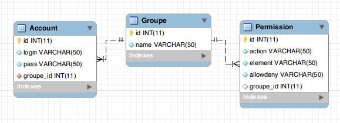
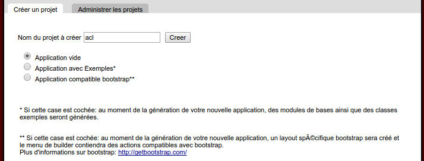
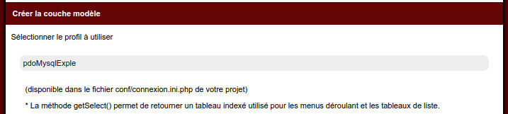
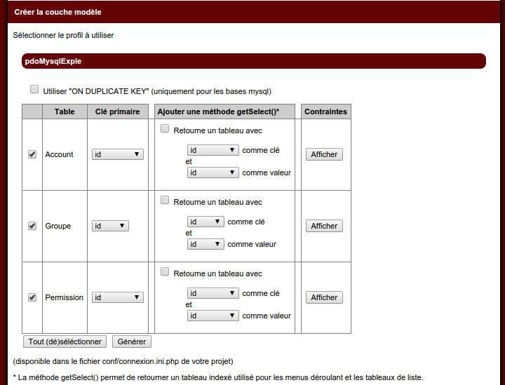
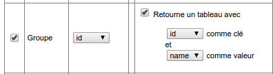
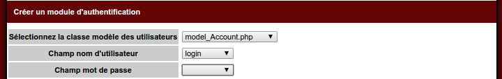
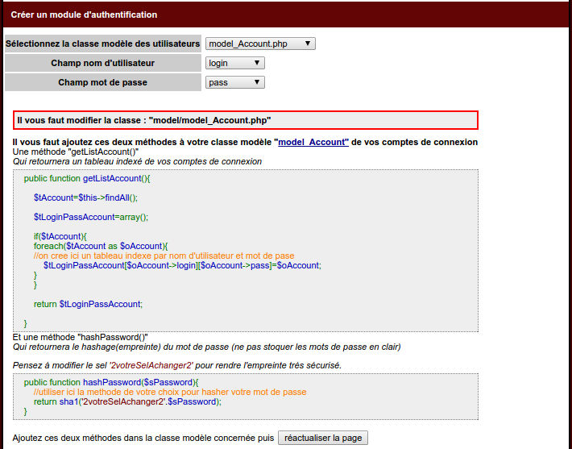
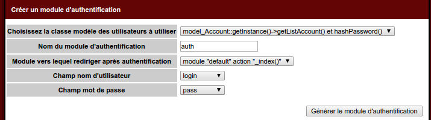
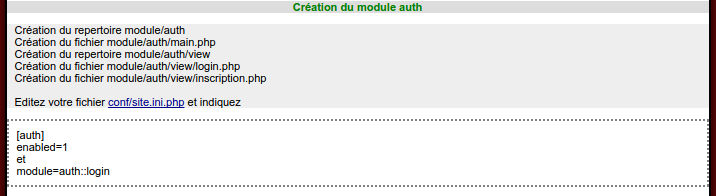
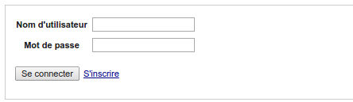

Episode 7: Gestion des droits 1/4
I. Introduction
Ce tutorial est divisé en quatre vidéos, nous allons y apprendre comment mettre en place une gestion de droits.Dans cette première partie, nous allons crééer les tables.
II. Le concept
Pour gérer les droits, nous autorisons certains profils à faire quelque chose sur certains éléments.III. Les tables
III.A. Le schéma
III.B. Table: Account
Contiendra les utilisateurs, cette table contiendra également le couple login/mot de passe.III.C. Table: Groupe
Contiendra les différents profils: administrateur, rédacteur...III.D. Table: Permission
Elle fera le lien entre les groupes et les éléments. Elle nous permettra d'indiquer que tel groupe à le droit de faire tel action sur tel éléments.III.E. La requête SQL
Dans ce tutoriel nous créons nos tables dans une base mysql.Nous créons ici une base "tutoACLdb"
CREATE TABLE `Account` (
`id` int(11) NOT NULL auto_increment,
`login` varchar(50) NOT NULL,
`pass` varchar(50) NOT NULL,
`groupe_id` int(11) NOT NULL,
PRIMARY KEY (`id`)
);
CREATE TABLE `Groupe` (
`id` int(11) NOT NULL auto_increment,
`name` varchar(50) NOT NULL,
PRIMARY KEY (`id`)
);
CREATE TABLE `Permission` (
`id` int(11) NOT NULL auto_increment,
`action` varchar(50) NOT NULL,
`element` varchar(50) NOT NULL,
`allowdeny` varchar(50) NOT NULL,
`groupe_id` int(11),
PRIMARY KEY (`id`)
);
IV. L'application
Ouvrez le builder, et créez une application vide "acl"
Connectons la à notre base de données précédement créé "tutoACLdb"
Editez le fichier conf/connexion.ini.php
;<?php die()?>
[db]
pdoMysqlExple.dsn="mysql:dbname=tutoACLdb;host=localhost"
pdoMysqlExple.sgbd=pdo_mysql
pdoMysqlExple.username=root
pdoMysqlExple.password=root
IV. La couche modèle
Cliquez ensuite sur "Créer la couche modèle"
Vous voyez le profil renseigné
En cliquant dessus, vous voyez les trois tables précédement créées

Pour la table groupe, cochez la case pour générer la méthode getSelect

Validez ensuite le formulaire.
V. L'authentification
Pour gérer des droits sur votre application, il faudra dans un premier temps identifié le profil de l'utilisateur. Pour cela il lui faudra s'authentifier sur celle-ciNote: cette partie a déjà fait l'objet d'un épisode: Episode 5: Builder: module d'authentification , dont le support est disponible ici
Cliquez sur "Créer un module d'authentification avec inscription"
Le builder vous demande quel classe model utiliser pour récupérer les utilisateurs, selectionnez "model_Account.php"
Selectionnez ensuite "login" pour le champ de nom d'utilisateur

Et "pass" pour celui de mot de passe

Le builder vous demande à ce moment là d'ajouter deux méthodes à votre classe model model_account.php
Une fois les méthodes copiées, cliquez sur le bouton de réactualisation "réactualiser la page"

Le builder vous affiche un nouveau formulaire que vous pouvez valider.

Le builder vous invite à activer l'authentification sur votre application: modifiez le fichier conf/site.ini.php
[auth]
;note : >= php5.2 dans le php.ini
;session.cookie_httponly=1
;session.use_cookies = 1
;session.use_only_cookies = 1
enabled=1
VI. L'application
En cliquant sur "voir le site", cette fois nous atterissons sur le formulaire de login: